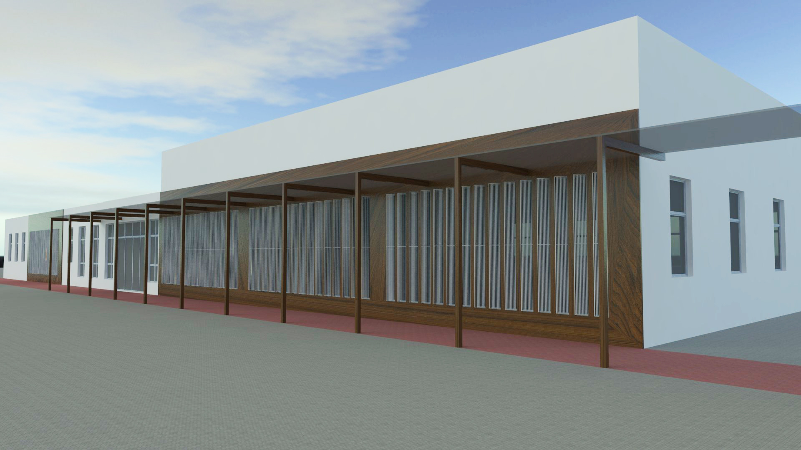
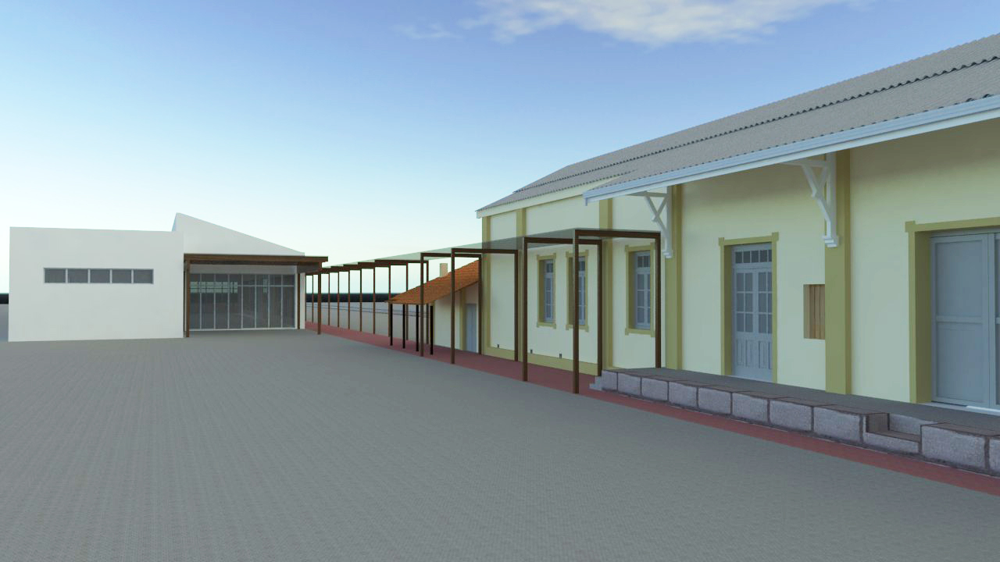
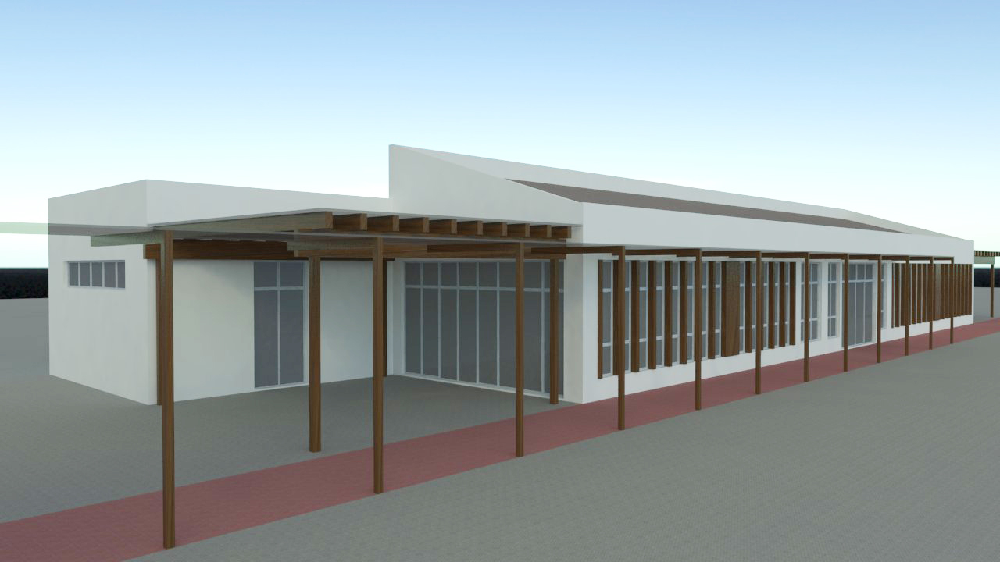
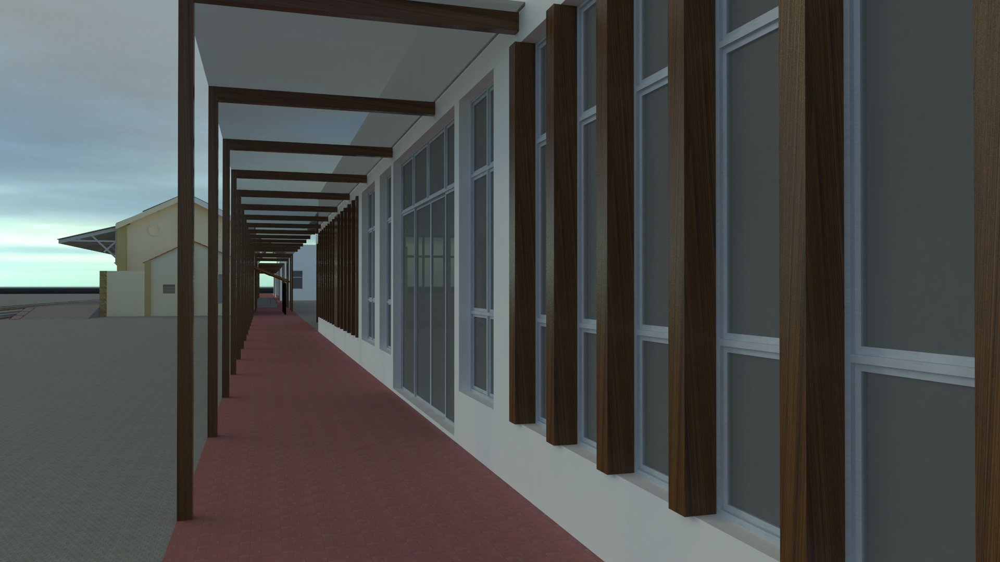
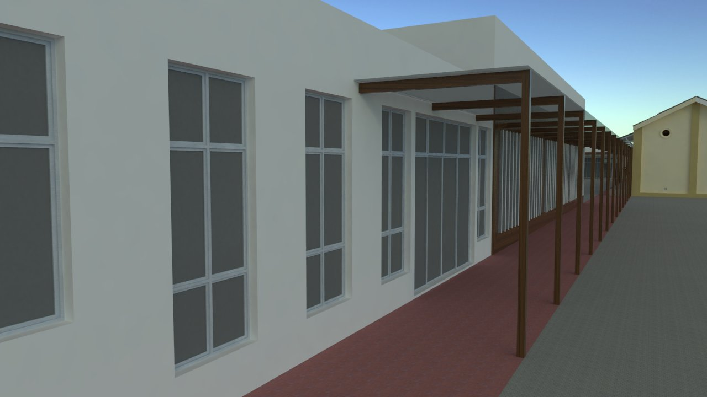
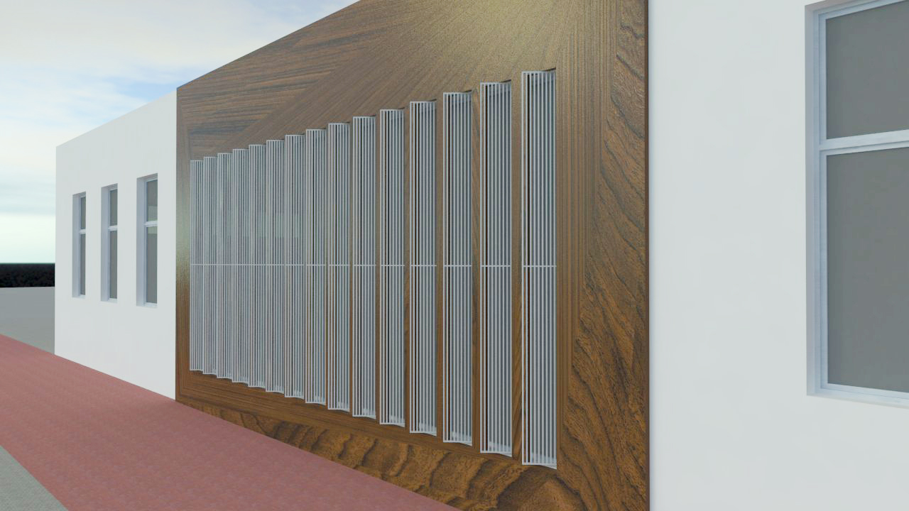

Ateliê de Projetos III
Descrição do Projeto
O objetivo deste trabalho foi projetar uma edificação levando em consideração a preservação e conservação da arquitetura de uma edificação já existente, no caso a Estação Ferroviária da cidade de São Pedro do Sul – RS, a qual representa um momento importante de desenvolvimento da região central do estado e o ciclo econômico da Viação Férrea.
A nova edificação funciona com um museu e centro de pesquisa paleontológico, contando com um espaço para exposição de fósseis, laboratórios de estudo, salas de aula, auditório e restaurante. Na edificação pré-existente ficam a recepção e bilheteria para o museu, loja de souvenirs e a parte administrativa do complexo.
O projeto foi modelado no software SketchUp e renderizado com o VRay para SketchUp 2.0.
     Voltar ao portfólio